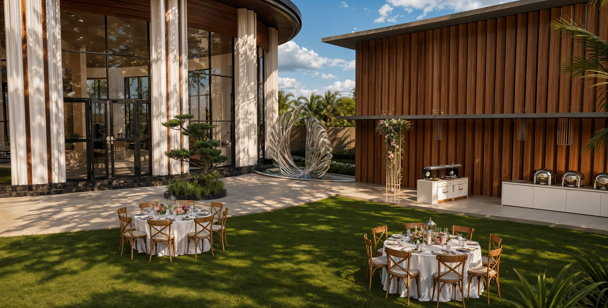
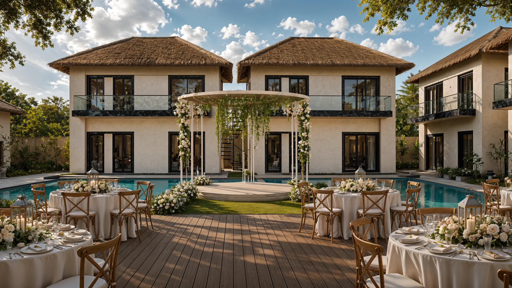

An Indian wedding is not one event. It is three days of haldi, mehendi, sangeet, baraat, pheras and reception, often for several hundred guests. A venue built for that needs a different plan from an ordinary banquet hall.
Most guides on building a wedding venue in India treat it as a single hall with a car park. That works for a city marriage hall. But a growing share of families now want a destination wedding, where the whole party arrives, stays on-site and celebrates across several days without leaving the property. Designing for that brings in decisions you never face with a hall: where guests sleep, how one lawn turns from a morning haldi into an evening sangeet, and how a kitchen feeding 600 people stays out of every photograph.
Our studio has worked on both kinds of venue. The Bliss in Bijnor is a two-acre banquet and celebration venue with a glass roof, lawns and a pool. Namah Stay in Agra is a wedding resort, now in concept design, where the wedding party stays in villas around a pool deck. This guide sets out what we have learned about destination wedding resort architecture: choosing the model, sizing the land, planning the site, approvals and cost.
Wedding Hall, Wedding Lawn or Destination Resort: Which Model Fits Your Land?
Before any drawing, decide what kind of venue you are building. The three common models in India serve different markets and need very different amounts of land and money.
| Model | What guests get | Best suited to |
|---|---|---|
| Banquet / marriage hall | An enclosed, air-conditioned hall for one or two functions, then guests go home | Smaller city plots; weddings in every season |
| Marriage lawn (or hall + lawn) | Open lawns for large receptions, usually with a covered hall as backup | Larger guest counts on the edge of a town, mostly in the winter wedding season |
| Destination wedding resort | Rooms or villas for the wedding party plus lawns, halls and a pool, for 2–3 days of events | Highway, heritage-city or scenic sites a few hours from a big city |
The resort model costs the most to build, but it earns from rooms as well as events, and it can sell off-season stays when there are no weddings. A hall costs less but earns only on wedding dates. If you own a few acres within driving distance of Delhi, Agra, Jaipur or Lucknow, the resort model deserves a serious look. If you have a small urban plot, a well-planned hall will usually serve you better.
Choosing and Sizing the Land
Start from your guest count. Owners who fix a hall size first often discover later that parking, kitchens and circulation do not fit. The plot-size estimates published by Houseyog give a useful first check for a single marriage hall with parking:
| Guest capacity | Approximate plot area | In acres |
|---|---|---|
| 300 guests | 10,000–18,000 sq ft | About 0.25–0.4 acre |
| 500 guests | 18,000–35,000 sq ft | About 0.4–0.8 acre |
| 800 guests | 35,000–70,000 sq ft | About 0.8–1.6 acres |
These figures are for a hall only. A destination resort adds guest rooms, a pool, open lawns and staff areas on top, so it needs considerably more land. The Bliss sits on two acres with a carpet area of about 3,750 sq m, and it is a banquet venue with a pool rather than a full stay resort. For the room component, our resort planning guide uses 6–12 keys per acre as a healthy low-rise density.
What to check before you buy
- Road access. Hundreds of cars, buses, caterers' trucks and a baraat all arrive on the same road. IIFL's banquet business guide suggests at least a 60-foot approach road. Whatever the local rule, a narrow lane turns every wedding into a traffic jam and a complaint to the police.
- Parking. In Houseyog's own space breakdown, parking, driveways and turning areas take up roughly 40–50% of the plot, so it belongs at the start of the plan.
- Land use. Much of the land on city edges is agricultural, and a wedding venue is a commercial use. Confirm the conversion path before paying for the land (see approvals below).
- Neighbours. Weddings run late with loud music. A site backing onto housing will face noise complaints for its whole life.
- The view. Destination guests travel for a setting: a heritage skyline, a river, an orchard, open fields. Note what the site looks at before deciding where the lawn and stage go.

Planning the Site Around a Three-Day Celebration
A wedding hall is planned for one evening. A destination venue is planned for a sequence of events, each with its own mood, size and time of day. We start every wedding venue by writing out that sequence and giving each event a home on the site.
Arrival and the baraat route
The arrival is the first photograph of the wedding. Guests should see a clear landmark building, step out of cars at a covered drop-off and walk straight into a welcome court. The baraat needs its own route: a stretch of open ground long enough for a band, a horse or vintage car and a dancing crowd, ending at the main gate where the bride's family receives them. At Namah Stay we gave this role to a curved, glazed reception building with a colonnade and a wave-patterned stone wall, so the arrival sets the tone the moment guests come through the gate.
Spaces for daytime functions
Haldi and mehendi are smaller, daytime and informal. They suit a poolside deck, a courtyard or a shaded garden near the rooms better than the main lawn. Keeping them close to the accommodation means guests can drift in and out between functions.
The main lawn and the reception hall
The sangeet, pheras and reception need the largest space on the site. In North India most families want the lawn in the winter season and a covered hall for the rest of the year, so the two should sit side by side. One stage position should serve both, and a covered walkway should link them so a sudden shower does not end the evening. IIFL's guide puts space planning at roughly 8–10 sq ft per guest indoors and 12–15 sq ft per guest on a lawn, because lawn events spread out with buffets, dance floors and lounge seating.
Rooms for the wedding party
This is what turns a venue into a destination. The families, close relatives and guests from out of town stay on-site, so rooms should feel like part of the celebration but still offer quiet at 2 a.m. At Namah Stay, two-storey villa blocks with thatched roofs and private balconies wrap the central pool deck: close enough to the action, but set back from the main lawn and its sound system.

Keeping Service Routes Away From Guests
The single most common failure we see in wedding venues is service crossing the guest space. Caterers push trolleys through the reception, generators sit next to the stage, and a decorator's truck blocks the baraat. A large wedding needs a lot of behind-the-scenes work, and all of it needs its own route.
- A separate service entry for caterers, decorators, tent and sound vendors, with its own loading area.
- A main kitchen and a live-counter kitchen close to the lawn and hall, connected to them by a service passage guests do not use. Read more in our hotel F&B planning guide.
- A vendor and staff zone with storage, changing rooms, toilets and a place for the band and dancers to wait.
- Plant and utilities (generators, DG sets, transformers, water tanks, waste) placed downwind and screened by planting.
- Separate toilets for guests near the lawn and hall, sized for a full crowd, plus separate staff toilets.
At The Bliss, the plan keeps guest and service movement clearly apart so the venue runs smoothly at full capacity. At Namah Stay, a stone-and-timber pavilion houses the catering, buffet and DJ operations so that they serve the lawn without intruding on it.

Architecture That Photographs Well
A wedding venue sells itself through photographs. Families look through other couples' albums and Instagram reels before they book, so the architecture is part of your marketing and should be designed with the camera in mind.
- A signature element. Give the venue one feature people remember and photograph. At The Bliss it is the sloping steel-and-glass roof over the hall, which fills the interior with daylight and is instantly recognisable. At Namah Stay it is the curved stone reception building.
- Backdrops in more than one place. Couples want different settings for different functions: the pool at dusk, a long colonnade, a garden pavilion, the entrance gate. Plan them as deliberately as the stage.
- Lighting designed with the architecture. Most functions happen after dark. Facade lighting, tree uplights and warm path lighting decide how the venue looks in evening photographs.
- A warm, lasting palette. Stone, timber and brass age well and suit every wedding theme. Decorators will bring their own colours each time, so the building should not fight them.

Designing for Monsoons and North Indian Summers
The North Indian wedding season peaks in the cooler months, but a venue that only works in winter loses half its year. Climate-responsive design keeps the venue usable for longer and keeps the running costs of cooling a large hall under control. Our guide to climate-responsive hotel design explains how.
- Covered walkways between hall, lawn, kitchen and rooms, so rain never stops a function.
- Planting on the south and west to shade the hall and lawn from harsh sun. At The Bliss, planting buffers the southern sun and water bodies near the stage help cool the space around guests.
- Daylight without glare. Glass roofs and large openings need careful shading so daytime functions do not overheat.
- Drainage under the lawn. A lawn that floods after one shower cannot be booked for the next day.
- Vastu-aligned orientation. Many families ask about the direction of the mandap and the main entrance. Planning these in from the start costs nothing. Fixing them later is expensive. The Bliss was planned to follow Vastu principles.
Approvals and Licences for a Wedding Venue
Wedding venues are assembly buildings with large crowds, so they face more scrutiny than a home or a small shop. The rules vary by state and city, and everything below must be checked with your local authority. The usual building blocks are:
- Change of land use. Converting agricultural or residential land to commercial or tourism use. This is the first check and the one that most often stalls a project.
- Building plan sanction. Approval of the architectural drawings by the local municipal or development authority, including setbacks, height, coverage and parking.
- Fire NOC. A fire safety certificate covering exits, fire-fighting systems and crowd capacity. It must be planned into the design, not applied for after construction.
- Environmental clearance. Needed once the built-up area crosses the threshold (generally 20,000 sq m), which a large resort can reach.
- Operating licences. Trade licence, FSSAI food licence, police permission for events, and where applicable a pollution consent and liquor licence. IIFL's guide gives typical timelines of 45–90 days for a fire NOC and 30–60 days for an FSSAI licence.
- Occupancy certificate. Issued once the building is complete and inspected, before the venue can legally open.
A venue that operates without the right permissions risks being sealed in the middle of a season. Build the approvals path into the plan during site selection, before you buy the land.
Cost and Timeline
The cost of a wedding venue depends on the model, the land, the finish level and the number of rooms. For a rough sense of scale, IIFL's guide puts a small-to-premium banquet or lawn business at roughly ₹40 lakh to ₹1.5 crore, excluding land. A destination resort is a much bigger project, because every room adds cost. Our resort cost guide puts a mid-scale (3-star) resort at about ₹35–60 lakh per key, excluding land, before the halls and lawns are added.
Treat these as starting points for a feasibility study. The final figure depends most on:
- Hall structure. A long-span steel or glass roof costs differently from a conventional RCC hall.
- Number and type of rooms. Standalone villas cost more per key than a block of rooms.
- Landscape and water. Lawns, pools and water features are central to a destination venue and a real share of the budget.
- Phasing. Many owners open the hall and lawn first and add rooms once wedding bookings are steady.
Two of Our Wedding Venue Projects
The Bliss, Bijnor (Uttar Pradesh)
A banquet and celebration venue on two acres, about 3,750 sq m in carpet area, with a private pool and landscaped lawns. A sloping steel-and-glass roof gives the hall its identity and lets in daylight. The plan separates guest and service circulation, opens the hall to the lawns, and uses water bodies and planting to keep large gatherings comfortable. See The Bliss project.
Namah Stay, Agra (concept design)
A wedding resort designed so the celebration never has to leave the property: a sculptural reception building in travertine-toned stone, two-storey guest villas with thatched roofs around a central pool deck, a long event lawn for seated receptions, and a stone-and-timber pavilion for catering and DJ operations. The project is in the concept design phase, and the images on this page are architectural renders. See the Namah Stay project.

Frequently Asked Questions
How much land is needed for a destination wedding resort in India?
A marriage hall with parking for 500 guests typically needs about 18,000–35,000 sq ft, or roughly 0.4–0.8 acre. A destination wedding resort adds guest rooms, a pool and open lawns, so it needs several acres. As a reference, our Bliss venue in Bijnor sits on two acres without full guest accommodation. The exact figure depends on guest count, the number of rooms and the local parking and setback rules.
What approvals are needed to build a wedding venue in India?
Usually a change of land use to commercial or tourism use, building plan sanction from the local authority, a fire NOC, environmental clearance for very large projects, and an occupancy certificate before opening. To operate you also need a trade licence, an FSSAI food licence and police permission for events, plus a liquor licence if alcohol is served. Rules vary by state, so confirm them locally before buying land.
Should a wedding venue be a hall, a lawn, or both?
In North India, both is usually the safest choice. Lawns are what most families want for large winter receptions, but a covered hall keeps the venue bookable in summer and during the monsoon. Place them side by side with a shared stage position and a covered walkway between them.
How many guest rooms does a wedding resort need?
Enough for the families, close relatives and out-of-town guests, who are the people who stay through all three days. The right number depends on your target wedding size and your land. A healthy low-rise resort density in India is about 6–12 keys per acre, and many owners start with fewer rooms and add villas in later phases.
Can agricultural land be used for a wedding venue?
Not directly. A wedding venue is a commercial use, so agricultural land normally needs a change of land use first. Some plots cannot be converted at all because of zoning or nearby restrictions, so check this with the local development authority before you buy.
When should you hire an architect for a wedding venue?
Before you buy the land. An architect can check whether the plot fits your guest count, parking, approvals and room plans, and can spot a site that will never work. Most of the expensive mistakes in wedding venues, from parking shortfalls to service routes crossing the lawn, are fixed for free at the planning stage and cost a fortune afterwards.
Designing a Venue Families Remember
A successful wedding venue is planned around the celebration itself: a clear arrival, a space for each function, service that stays out of sight, rooms that keep the party together, and architecture that looks good in every photograph. Get the land, the sequence and the approvals right at the start and the venue can run for decades.
If you are planning a wedding resort, banquet hall or celebration venue and want to know what your land can hold, talk to our studio. You can also explore our resort & hotel architecture practice to see how we work on hospitality projects.